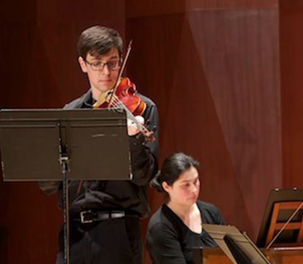
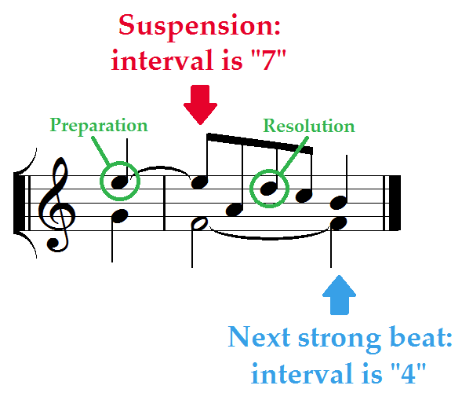
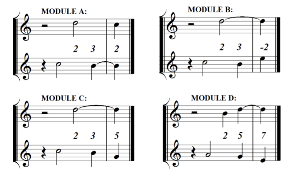
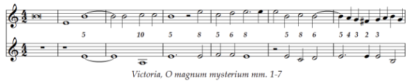
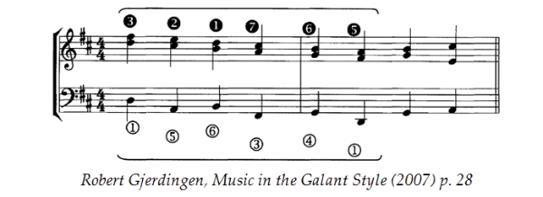
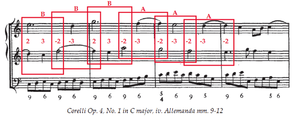
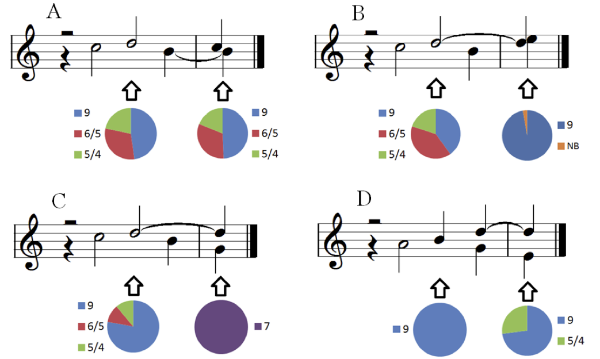
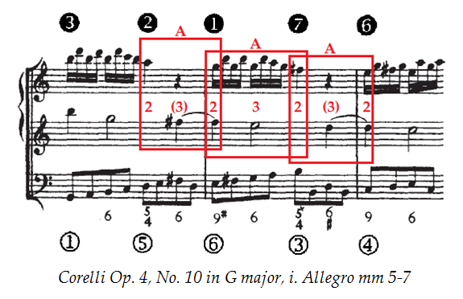

From Module to Schema: an interview with Sam Howes
Posted by ehopkins on July 11, 2016
Sam Howes is a PhD student in Music Theory at McGill, and a researcher for the SIMSSA project. He recently presented a paper at the SMT Early Music Analysis Interest Group Conference in Indiana, “From Module to Schema in Corelli’s Trio Sonatas.” I interviewed him for the blog to talk about his research and his experiences with computer music analysis and SIMSSA.

Emily Hopkins: When did you first become interested in using computers to do musical analysis?
Sam Howes: In the summer of 2015 I took an introductory computer science course and around that same time, I discovered Peter Schubert’s “Improvising a Canon” videos on Youtube. The simple description of melodic rules in those videos is what first helped me realize that strict counterpoint can be generated, and even queried, algorithmically.
EH: What was the main research question for this project?
SH: My aim was to better understand Corelli’s compositional process in his Op.4 trio sonatas—specifically, his use of recurring snippets of counterpoint, which are called modules. Contrapuntal modules show up in all kinds of music from Renaissance to Romantic, so I was curious to see what kinds of modules Corelli was using. Most scholars agree that Corelli’s music is one of the first clear examples of common-practice harmony, so I was also curious to see what kinds of harmonic ramifications (if any) Corelli’s modules might have.
EH: How did you approach this question from the standpoint of computer-based analysis?
First I had to define the scope of my search. Having played many of Corelli’s sonatas, I decided to focus on suspensions, which are ubiquitous in the upper voices, as any violinist will tell you. Like the rules for improvising a canon, the rules for suspensions relate a vertical event (a dissonant interval) to the horizontal events around it (preparation and resolution). Finding a second or a seventh between the violins means more than just finding a suspension: it means finding a little snippet of counterpoint necessitated by those rules.

The tools I started with—the VIS Framework and the Rodan Client—converted all the intervals in all the sonatas into numbers. Then, I wrote a Python script to search for suspensions in the violins. When a suspension was found, the script would also record the interval on the next strong beat.
From there, the patterns of intervals that were most common are what I chose to think of as “important words” in Corelli’s vocabulary. There were four of these, which I called Modules A through D.

EH: For those of us who are newer to this area of music theory, can you explain what a module is? A schema?
SH: The term module was first defined by Jessie Ann Owens in her 1997 book Composers at Work. More recently, this term has gained a lot of attention in the work of Peter Schubert and Julie Cumming, who show how modules function as basic structural units in Renaissance music. In short, a module is any contrapuntal combination, of any length, that appears more than once in a piece. Modules are usually labelled with a series of numbers that represent the vertical intervals between the voices, as in the example below:

The term schema (pl. schemata) comes from Robert Gjerdingen’s book Music in the Galant Style, in which he describes and names several common harmonic patterns in music around the turn of the eighteenth century. Schemata are similar to modules in that they feature a prescribed relationship between two voices (usually the outer voices, with inner voices being optional) and the title of my paper, “From Module to Schema in Corelli’s Trio Sonatas,” hints at this similarity, suggesting a sort of evolution from one to the other. The picture below is of a popular schema known as the “Romanesca.” 
EH: Can you explain a couple of your most interesting findings?
SH: There were two major findings. The first is that modules often combine with themselves and with each other to form sequences. Modules A and B are especially likely to do this.

The second is that all modules are likely to be supported by certain bass lines more than others. Module A has a wide variety of possible harmonizations, while Module B begins to show a preference for basslines that move up by a fifth or a second. Module C is harmonized almost exclusively by descending fifths, and Module D prefers root motions of descending fifth or ascending second.

Combining these two findings, I was able to show how chains of modules begin to behave like schemata. Imagine a chain of suspensions that progresses downwards (a sequence composed entirely of Module A). If this chain is harmonized with alternating five-four chords and ninth chords, the schema that emerges is a Romanesca.

EH: What was your technical background in terms of coding and computer analysis before coming to McGill? What have you learned since starting here?
SH: In terms of coding, almost nothing. The computer science course I took was an introduction to Java with an emphasis on image manipulation, so there was definitely a learning curve when I started working with Python and all these data in the form of spreadsheets.
I would say the most important thing I’ve learned so far is how to think algorithmically— how to craft a question in the most efficient way for a computer. Music theory is all about asking questions and computer analysis is a wonderful way to practice asking the right questions in the right order.
EH: Tell me more about your experience collaborating with other coders for this project and more generally at McGill.
SH: One of our post-docs, Reiner Krämer, was a big help in getting me started with Python; he constantly encouraged me to make my code more efficient and to “think algorithmically.” Other VIS experts in the lab like Alex Morgan and Marina Borsodi-Benson made helpful suggestions during and after the presentation of my first draft. Marina in particular made an important contribution to the search process itself, allowing me to account for all dissonances (including cadential suspensions) and not just the ones that fall into one of the four groups I mentioned earlier.
EH: What made you choose a live ensemble to demonstrate your musical examples? What were the advantages and disadvantages? Would you do it again, or recommend it to a colleague?
SH: Because I argued that the bass was a sort of auxiliary voice that “coloured” the modules in the upper voices harmonically, it was very useful to be able to hear just the violins, or just the bass, before putting the whole texture together. I would definitely recommend this to anyone who is presenting on counterpoint, with the caveat that a rehearsal with performers, as well as the timing of the examples, can sometimes be tricky at a conference.
EH: Did working on this project give you ideas for other software tools to develop that would be useful in the future?
SH: Rather than any one idea or tool, I would say that the most important thing to develop next is some kind of guide to the enormous variety of existing analysis tools that are available for free online. Such a guide might help people like me (with little technical background) to harness the power of computer analysis in their own research and to experience the rapidly expanding world of digital music theory for the first time.